地政学
ドゥシャンベはアフガニスタン、中国、ウズベキスタン、キルギスに囲まれた山岳国家の首都です。水資源、国境、安全保障、労働移動、ロシアや中国との関係が、谷の都市へ集まります。外交の窓口であり続けます。
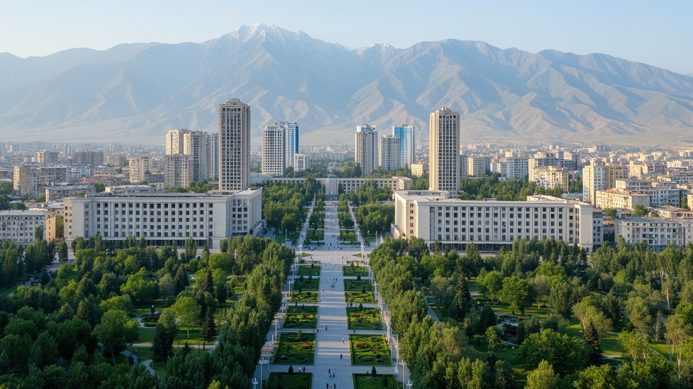
🇹🇯 タジキスタン共和国 / 首都 / World City Atlas
ヒサール谷の山麓に広がる中央アジアの首都です。国家政治、送金経済、建設、教育、バザール、イスラム文化、ソ連都市遺産、水資源の課題が、緑の大通りに重なります。
都市の骨格
ドゥシャンベはヴァルゾブ川と広い大通りを軸に、官庁、住宅、大学、バザール、公園、交通結節点が近接する首都です。内陸山岳国家の政治と移動、送金と建設、若い人口の生活がここで交差します。
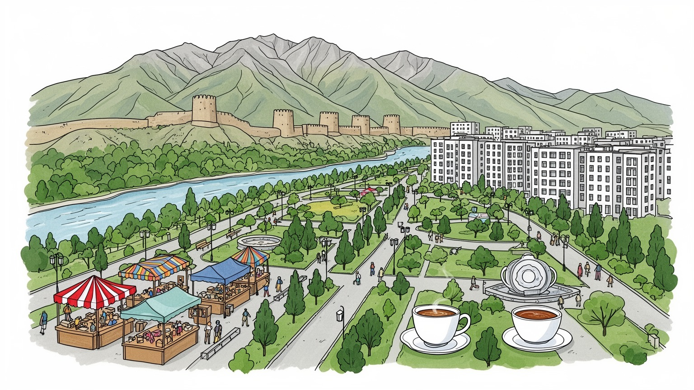
ドゥシャンベはアフガニスタン、中国、ウズベキスタン、キルギスに囲まれた山岳国家の首都です。水資源、国境、安全保障、労働移動、ロシアや中国との関係が、谷の都市へ集まります。外交の窓口であり続けます。
行政、建設、小売、繊維、教育、医療、交通が雇用を作ります。国外で働く人の送金は家計と消費を支え、首都の住宅、商店、学費にも流れます。若い労働力の技能形成が重要です。都市の賃金差も見えます。課題が残ります。
タジク語、ペルシア語圏の文学記憶、イスラム、ソ連期の世俗制度が重なります。ルダキの名、公園、劇場、モスク、茶館、家族行事は、国家文化と日常の信仰を結びます。祝祭も街を温めます。学生文化も育ちます。
観光客はルダキ公園、国立博物館、メフルゴン市場、ヒサール要塞、山麓へ向かいます。住民は夏の暑さ、冬の暖房、渋滞、住宅費、公共サービスを調整しながら暮らします。公園は日常の休息地です。夕方も賑わいます。
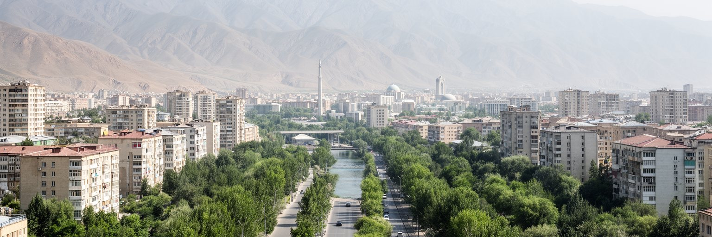
ドゥシャンベはヒサール谷の中に置かれた首都です。北には山が迫り、ヴァルゾブ川とコファルニホン川の流域が都市の水、緑、道路、住宅地の向きを決めています。標高は高すぎませんが、盆地状の地形は夏の暑さ、冬の湿り、空気の滞留、地震リスクを都市計画の前提にします。広いルダキ大通りや公園は首都らしい秩序を見せますが、街の背後には山村、灌漑、雪解け水、斜面開発の問題があります。山岳国家タジキスタンでは、平地が限られるため、首都の拡大は土地利用の競合を強めます。住宅、道路、学校、商業施設を増やすほど、排水、斜面の安全、緑地の保全、交通処理が重要になります。谷底の都市は景観に恵まれますが、同時に逃げ場の少ない都市でもあります。大気汚染や渋滞が起きると、山の囲みは問題を見えやすくします。ドゥシャンベを読む時は、単に中央アジアの首都としてではなく、山、水、谷、地震、限られた平地に国家機能を載せた都市として見る必要があります。公園の涼しさや街路樹の影は、美観ではなく気候に対する生活技術です。山を背景にした穏やかな首都景観の中に、土地と水をどう分け合うかという緊張もあります。さらに谷の都市では、どこに新しい住宅を許し、どの斜面や水路を残すかが、将来の災害と暮らしやすさを左右します。市街地の成長を山の制約と調和させる視点が欠かせません。
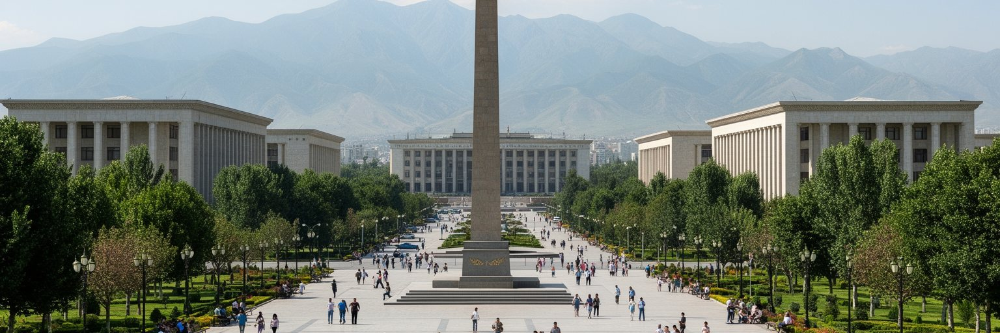
ドゥシャンベはタジキスタン政治の集中点です。大統領府、議会、省庁、大使館、国立博物館、記念碑、公園が中心部に配置され、ルダキ大通りは国家の正統性を見せる舞台になっています。独立後のタジキスタンは内戦の記憶を抱えながら国家統合を進めてきたため、首都の空間には平和、統一、タジク文化、古代史、指導者の権威を示す表現が強く現れます。国旗掲揚塔や広い広場は、外から来る人に国家の安定を印象づけますが、政治都市を読むには記念空間だけでは足りません。地方から来る市民が役所にアクセスできるか、報道や市民活動がどの程度開かれているか、公共事業が生活の改善につながるかも重要です。首都は国の顔である一方、権力が集中する場所でもあります。街路の整備、建物の更新、警備、式典は都市をきれいに見せますが、住民の評価は住宅、学校、医療、交通、雇用の実感で決まります。ドゥシャンベの政治性は、壮大なモニュメントと日常の行政手続きが近い距離にあることにあります。公園で家族が休む横で国家儀礼が行われ、地方の課題が首都の会議室へ持ち込まれます。国家を象徴する都市が住民の生活をどこまで代表できるかが、この首都の成熟を測ります。地方の道路、農業、水、雇用の不満が首都で政策化される時、記念軸は単なる景観ではなく統治の実験場になります。
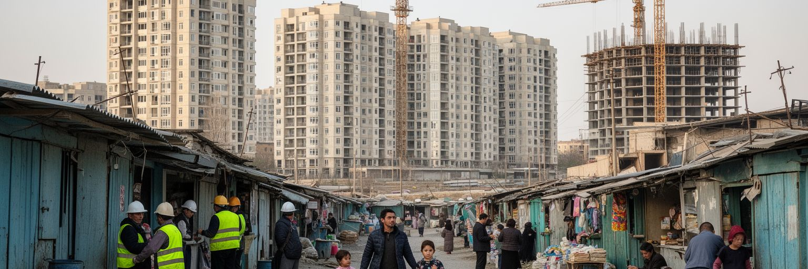
ドゥシャンベの経済を考える時、首都の官庁や商業だけでなく、国外で働くタジキスタン人の送金を見なければなりません。ロシアなどで働く労働者からの送金は家計を支え、住宅の改修、学費、結婚、医療、消費、商店の売上に流れます。首都では新しい集合住宅、ホテル、道路、商業施設が増え、建設業は雇用と都市景観を大きく変えています。けれども送金に依存する経済は、移住先の景気、為替、政治、移民規制に左右されやすいです。家族の片方が国外で働き、残る家族が首都で子どもの教育や高齢者の世話を担う形も多く、経済統計だけでは生活の負担が見えません。建設現場では技能、賃金、安全、季節性が課題になり、急速な開発は住宅価格や家賃を押し上げます。新しい高層住宅は近代化の象徴ですが、低所得世帯や学生、地方から来た若者にとっては住まいの選択肢を狭める可能性があります。ドゥシャンベの成長は、外で稼いだお金を首都の土地と建物へ変える動きでもあります。その資金が教育、医療、公共交通、起業へ広がれば都市は厚くなりますが、不動産だけに集中すれば格差を深めます。送金で支えられる家計と、首都を作る建設労働を同時に見ると、この都市の経済の脆さと粘り強さが分かります。銀行、両替、携帯送金、住宅ローンの使われ方にも、国外労働と都市消費の結びつきが現れます。
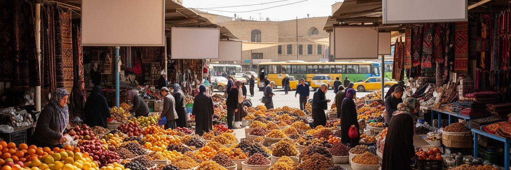
ドゥシャンベはもともと市場の町として知られ、都市名も月曜市の記憶と結びついています。現在の首都には近代的なショッピングセンターや整備された市場が増えていますが、バザールは今も食料、衣類、家庭用品、交通、会話、信用を結ぶ生活の中心です。メフルゴン市場のような大きな市場では、国内の農産物、輸入品、乾果、香辛料、肉、布、生活雑貨が並び、地方と首都、国外貿易と家計が接触します。市場で働く人には、店主、荷運び、清掃、運転手、露店、修理、食堂、警備など多様な仕事があります。観光客には色彩豊かな場所に見えますが、住民にとっては価格、品質、交通、衛生、治安、現金収入が切実です。市場の再開発は衛生や防災を高める一方、小さな商いを押し出すこともあります。首都が整然とした景観を求めるほど、路上販売や informal な労働は見えにくくなります。しかしドゥシャンベの都市経済を支えているのは、官庁や大企業だけではありません。日々の買い物、親族への贈り物、結婚式の準備、地方から届く野菜、輸入品の小売が都市を動かしています。バザールは過去の名残ではなく、家計が物価の変化を直接感じる場所です。市場を歩くと、送金、農村、輸入、都市の消費が一つの通路で結びついていることが分かります。価格交渉の声や荷車の動きは、統計では拾いにくい首都の実体経済を伝えます。
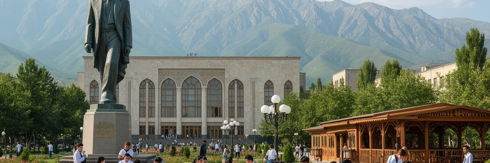
ドゥシャンベの文化は、タジク語を軸にしたペルシア語圏の文学記憶と、ソ連期に整えられた都市制度が重なってできています。ルダキ、フェルドウスィー、サーマーン朝への言及は、タジク国家が自分の歴史的深さを示す時に重要です。公園、通り、博物館、劇場、大学、記念碑には、その文化的な自己像が刻まれています。一方で、ロシア語は行政、教育、ビジネス、移民労働との関係で今も広く使われ、若い世代は英語、中国語、トルコ語にも触れます。都市の言語環境は、国家文化の復興と国際的な実用性の間で揺れています。音楽、詩、結婚式、茶、家族の集まり、ナウルーズの祝祭は、文化を公式行事から日常へ戻します。ソ連期の劇場、集合住宅、学校、研究機関は、独立後も都市の骨格として残り、そこに新しいモスク、商業施設、国民的記念空間が加わりました。ドゥシャンベの文化を観光向けの民族色だけで見ると、都市の複雑さを見落とします。ここでは中央アジア、イラン世界、ロシア語圏、イスラム、世俗教育、移民経験が同じ家庭や学校に入っています。文化は展示物ではなく、どの言葉で学び、働き、祈り、家族に連絡するかという選択に現れます。その重なりが、首都の静かな深さを作っています。大学の教室や結婚式場、劇場の舞台に行くと、国家文化と個人の記憶が同じ言葉の中で交差します。
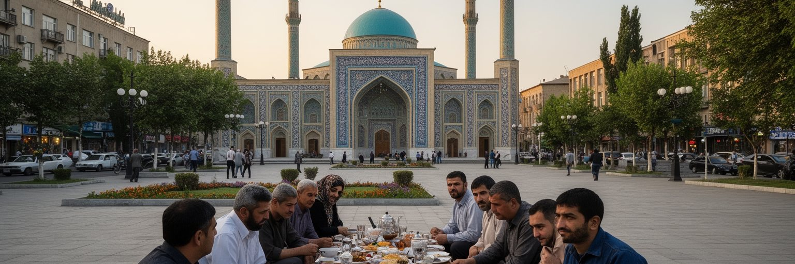
ドゥシャンベではイスラムが家族行事、食、慈善、葬送、祝祭、生活リズムに深く関わります。大きなモスクや地域の礼拝空間は信仰の場であると同時に、親族関係や近所のつながりを支える場所です。ただしタジキスタンの国家は世俗制度を重視し、宗教活動は政治や安全保障の文脈でも管理されます。内戦の記憶、国境を越える思想、若者の宗教教育、服装や公共空間の扱いは、社会の微妙な緊張を含んでいます。首都では大学、劇場、官庁、カフェ、モール、モスクが近くにあり、世俗的な都市生活と信仰が日常的に並びます。女性の教育や雇用、若者の自由、家族の期待、宗教的な規範は、家庭ごとに異なる形で交渉されます。観光客は大きな建築や公園を見ますが、宗教の現実は金曜礼拝だけでは分かりません。病気の見舞い、結婚式、ラマダン、祖先への敬意、近所の助け合いに信仰の働きが現れます。ドゥシャンベの社会生活は、厳格な宗教都市でも完全に世俗化した都市でもありません。国家が管理する公共秩序、家族が守る慣習、若者が求める選択肢が同じ街にあります。宗教を対立の材料としてだけ見ず、生活の支えとしても見ることが、この首都の理解には欠かせません。祈りの場と大学、茶館と役所が近い距離で並ぶことが、この都市の社会的な現実です。礼拝後の食事や家族訪問にも、都市の信頼関係が表れます。
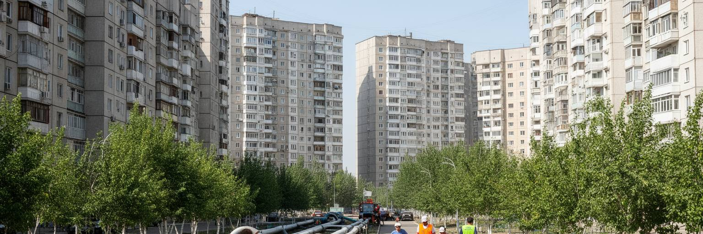
ドゥシャンベの人口増加は、住宅と公共サービスへ強い圧力をかけています。ソ連期の集合住宅、低層の家屋、新しい高層マンション、郊外へ広がる住宅地が混在し、所得や家族構成によって住む場所が分かれます。首都に仕事、大学、病院、行政機能が集まるため、地方から若者や家族が移ってきます。新築住宅は街を近代的に見せますが、家賃、住宅価格、断熱、エレベーター、駐車場、学校までの距離、公共交通との接続が暮らしを左右します。冬の暖房、夏の冷房、水道、下水、廃棄物収集、街灯、歩道、医療の待ち時間は、所得の低い世帯ほど重く感じます。古い住宅地ではインフラの更新が必要になり、新しい地区では学校や診療所、商店、公園が後から追いかけることがあります。都市が広がるほど、移動に時間がかかり、バスやタクシーへの依存も増えます。ドゥシャンベの住宅問題は、数を増やせば解決する単純な課題ではありません。若い世帯が無理なく住める価格、女性や子どもが安全に移動できる街路、高齢者が近所で用事を済ませられる環境が必要です。公園や並木道は都市の余白ではなく、暑い季節の避難場所でもあります。首都の豊かさは、新しい建物の高さより、毎日の用事を安心して済ませられる公共サービスに表れます。管理組合、修繕費、近所の商店、保育施設まで含めて、住まいは都市政策の総合問題になります。
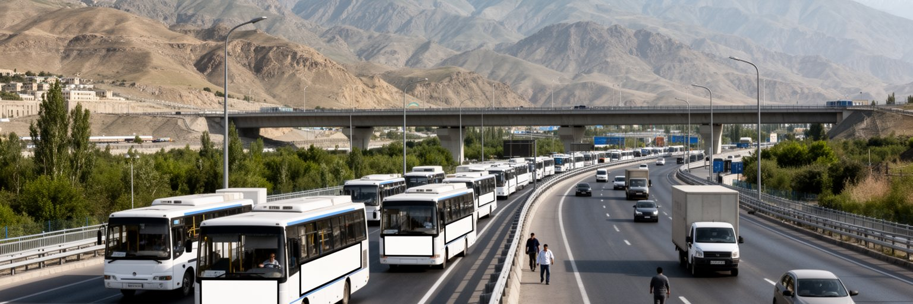
ドゥシャンベの交通は、首都内部の移動と山岳国家の広域連結を同時に担います。空港は外交、出稼ぎ、留学、ビジネス、観光の玄関であり、道路は北部、南部、パミール方面、ウズベキスタン国境、アフガニスタン国境へ向かう重要な線です。山が多い国では、トンネル、橋、峠道の維持が経済と安全保障に直結します。首都の道路が整備されても、地方へ続く道が雪崩、土砂災害、冬季閉鎖に弱ければ、物流や医療、教育へのアクセスは不安定になります。市内ではバス、トロリーバス、乗合タクシー、自家用車、徒歩が混ざり、人口増加と車の増加で渋滞が課題になります。広い大通りは国家首都らしい景観を作りますが、歩行者にとっては横断距離や日陰、停留所の快適さが重要です。公共交通が信頼できれば、学生、女性、高齢者、車を持たない人の選択肢が広がります。内陸国の首都にとって、交通は単なる便利さではなく、国境管理、貿易、送金労働、観光、災害対応を支える基盤です。ドゥシャンベを通る人の流れには、地方から来る学生、国外へ向かう労働者、山岳観光の旅行者、行政手続きのために集まる市民が含まれます。空港と峠道、バス停と学校がつながる時、首都は国土全体の結節点になります。歩道の段差、停留所の日陰、運賃の支払い方まで、細部の設計が移動の公平さを決めます。日々の通学も支えます。
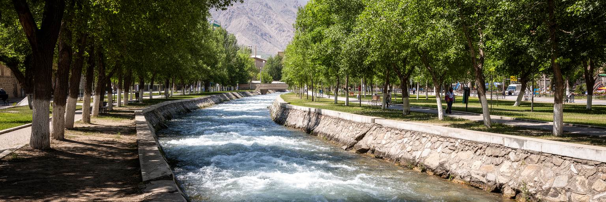
タジキスタンは中央アジアの水資源にとって重要な国であり、ドゥシャンベもその文脈から切り離せません。山岳地帯の雪と氷河は河川を生み、灌漑、飲料水、発電、農業、国境を越える水交渉に関わります。首都では水道、下水、河川管理、公園の緑、暑い季節の冷却、冬の暖房が生活の質を決めます。気候変動で氷河の後退、洪水、干ばつ、熱波、土砂災害の不安が高まるほど、山麓都市の水管理は重要になります。ドゥシャンベの街路樹や公園は、夏の暑さを和らげる都市インフラでもあります。緑地が減り、舗装面と車が増えれば、暑さと大気汚染は強まります。水資源が豊かな国というイメージがあっても、都市の水道が安定し、下水が処理され、河川が汚れず、低所得地区にもサービスが届くかは別の問題です。気候リスクは自然現象であると同時に、都市管理と社会の公平さの問題です。川沿いに住む人、古い住宅に暮らす人、冷房費を払えない人、情報を得にくい人ほど被害を受けやすくなります。ドゥシャンベが水と緑を守ることは、観光の美しさだけでなく、健康、教育、労働、災害対応を守ることでもあります。山の雪解け水が首都の日常へ届く仕組みを丁寧に保つことが、未来の都市の安全につながります。節水、漏水対策、河川清掃、暑熱時の避難場所づくりは、派手ではなくても首都の強さを支えます。
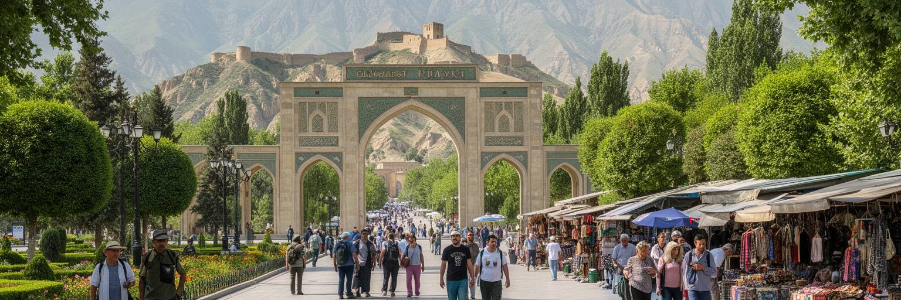
ドゥシャンベ観光は、首都そのものを歩く時間と、山岳国へ向かう出発点としての役割が重なります。市内ではルダキ公園、国立博物館、国立図書館、ナヴルズ宮殿、メフルゴン市場、劇場、モスク、緑の大通りが旅行者を迎えます。少し足を延ばせばヒサール要塞や山麓の景色があり、さらにパミール高原、ファン山地、湖、峠道へ向かう旅の準備も首都で行われます。観光客にとってドゥシャンベは、空港、宿、旅行会社、許可、ガイド、車、医療、通信を整える実務の拠点です。同時に、タジキスタンの国家像、言語、食、信仰、都市生活を短い距離で理解できる場所でもあります。観光の課題は、記念建築を見せるだけではなく、歩道、案内、公共交通、衛生、治安、歴史説明、地元の小商いへ利益を残す仕組みを整えることです。山岳観光が伸びても、首都で働くガイド、運転手、宿泊業、食堂、職人、学生に機会が広がらなければ、観光の効果は薄くなります。ドゥシャンベには派手な世界遺産都市とは違う静かな魅力があります。夕方の公園、茶を飲む家族、市場の乾果、山の影、ソ連期の劇場、新しい高層建築が並ぶことで、国の変化が見えてきます。旅はここから山へ向かいますが、首都を丁寧に歩くことで、山岳国の社会の入口が開きます。短い滞在でも、朝の市場と夕方の公園を組み合わせると、観光と日常の距離が近く感じられます。
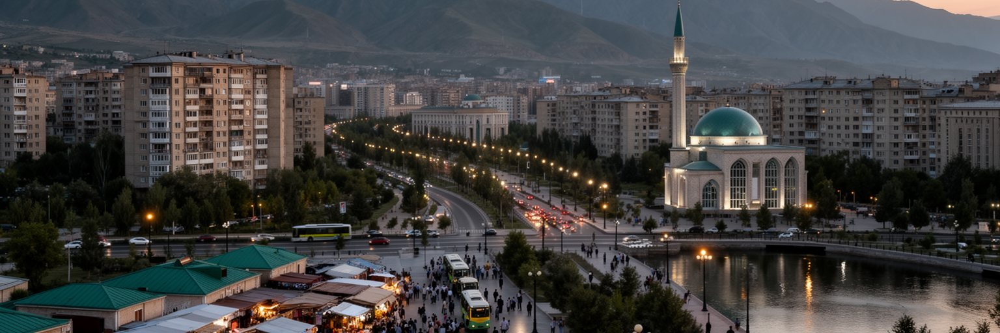
ドゥシャンベを読むことは、山岳国家タジキスタンの現在を都市の中で見ることです。人口規模では世界の巨大都市ではありませんが、首都には国家政治、内戦後の統合、若い人口、移民送金、建設、教育、宗教、バザール、水資源、気候リスク、国境を越える交通が集まっています。広い大通りや記念碑は安定した国家像を示し、新しい住宅や商業施設は成長を見せます。しかし都市の実力は、送金に頼る家計、地方から来た学生、建設現場の労働者、市場の小売、公共交通を使う住民、冬の暖房や夏の水を必要とする家庭の日常に表れます。ドゥシャンベは、ペルシア語圏の文化記憶とソ連都市の制度、イスラムの生活文化と世俗国家、山岳の自然条件と首都の近代化を同時に抱えます。国際的にはロシア、中国、中央アジア、アフガニスタンとの関係が首都の判断に影響し、国内では地方との格差や若者の雇用が課題になります。観光客は公園や博物館を巡るだけでなく、バス停、市場、集合住宅、川沿い、大学、山へ向かう道路にも目を向けたいです。そこに、公式の首都像と生活都市としての現実の距離が見えます。ドゥシャンベの価値は、その距離を縮めながら、山と水に支えられた暮らしを公平に守れるかにあります。小さな首都に見えても、ここには中央アジアの労働、文化、環境、安全保障の論点が濃く集まっています。